Icon style options
Four styles from the sample sheet, drawn for Coffee & Drinks, Habit Journal, and Focus. The small icons are about iPhone Home Screen size. The live app icons are unchanged until you pick a style.
Coffee & Drinks
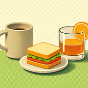
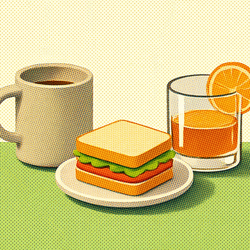
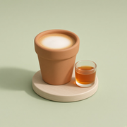
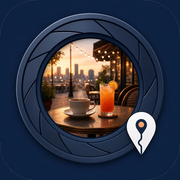
Habit Journal
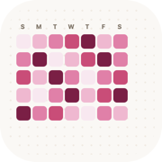
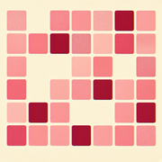
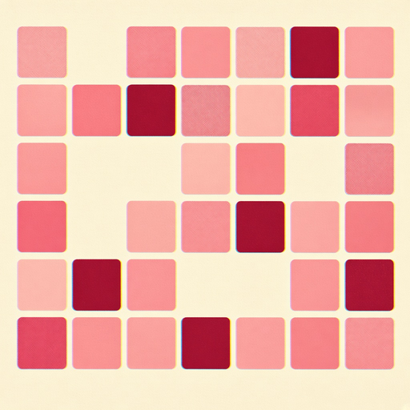
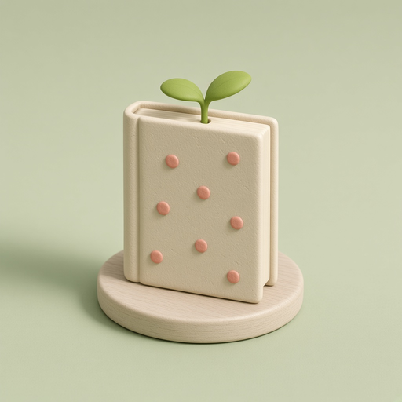
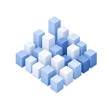
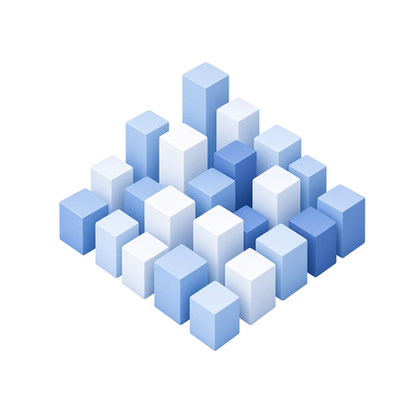
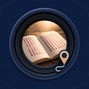
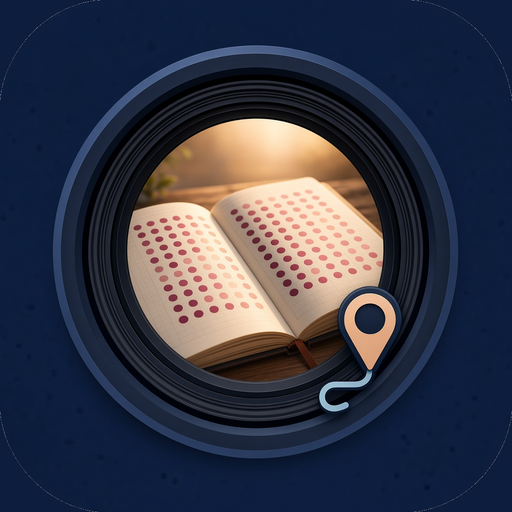
Focus
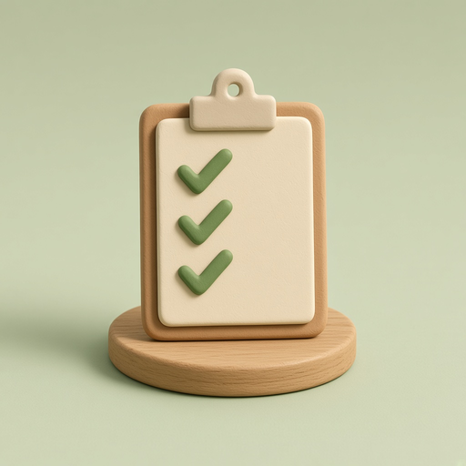
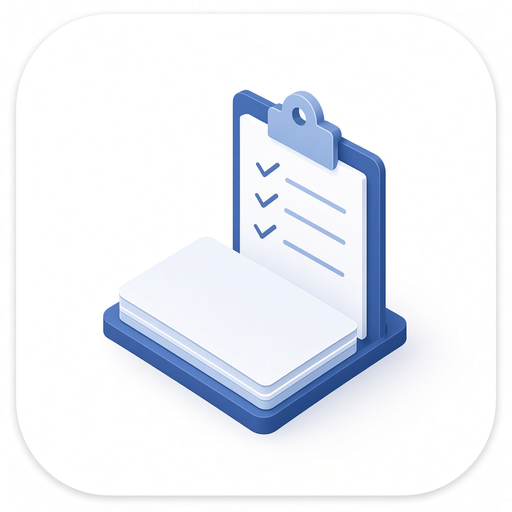
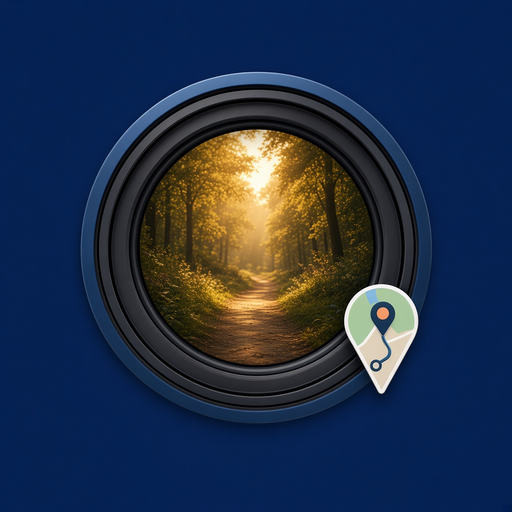
Previous icons are saved in each app’s icon-previous folder. Home Screen files are the 180×180 PNGs named tone, pixelpot, daycity, and passage.